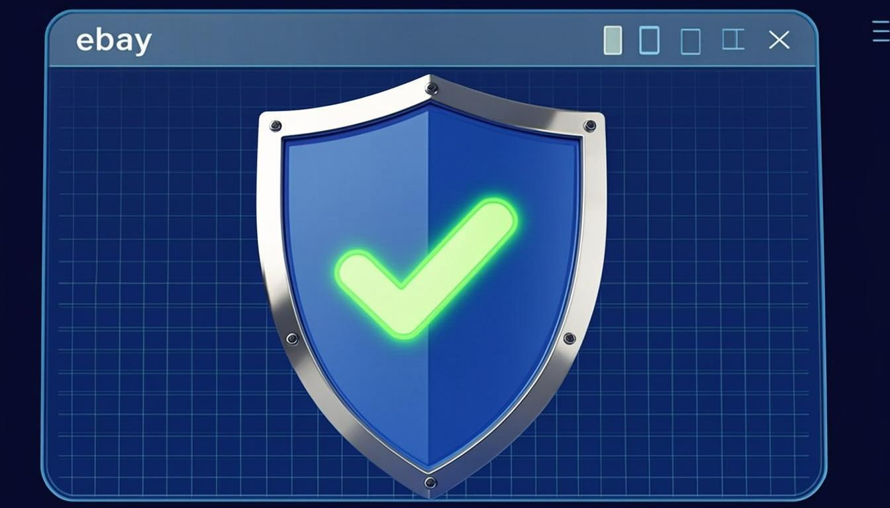
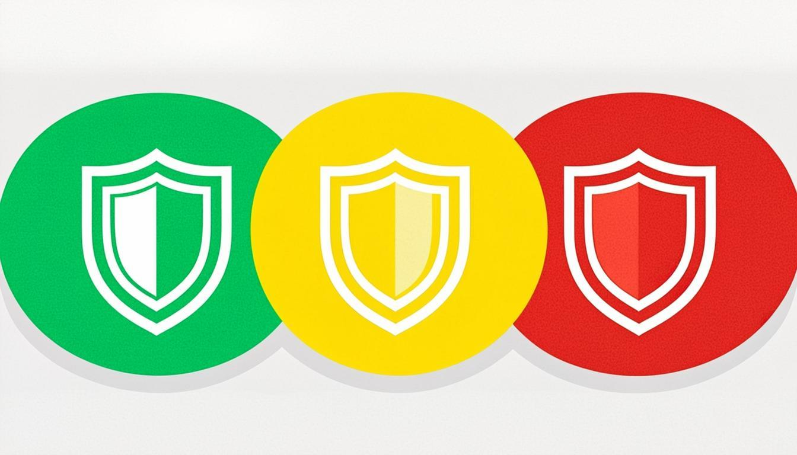

Instant Risk Badges
Color-coded green, yellow, and red badges appear next to seller names on every eBay listing page — no clicks needed.
eBay Buyer Guardian is a free Chrome extension that shows color-coded risk badges next to seller names on eBay. Spot scams before you buy — custom rules, search badges, and history dashboard in Pro.

Free core protection with Pro upgrades for power users. No bloat, no hidden costs, no external API calls.
Color-coded green, yellow, and red badges appear next to seller names on every eBay listing page — no clicks needed.
See risk badges directly on eBay search results — spot bad sellers before you even click on a listing.
Set your own thresholds for feedback percentage, feedback count, and account age. Scoring adapts to your risk tolerance.
Every seller you encounter is logged with risk level, stats, and timestamp. 25 entries free, 500 with Pro.
Zero external API calls for analysis. All parsing and scoring runs in your browser. Fewer CAPTCHAs than competitors.
Runs only on eBay pages. No background processes, no bloat. Injects a single badge — no page layout disruption.
Combines feedback percentage, feedback count, and account age into a single actionable risk score with clear thresholds.
Download your seller history as a CSV file for your own records, spreadsheets, and analysis.
Hover any badge for a detailed breakdown of exactly why a seller was flagged — specific factors and thresholds.
Hover any badge for a detailed breakdown of why a seller was scored the way they were. Green = safe, yellow = caution, red = high risk.
Start free with listing page protection. Upgrade to Pro for search badges, custom rules, and the full power-user toolkit. One-time lifetime option available.
Basic protection on listing pages
Full protection, cancel anytime
Pay once, protect forever
Payments processed securely by Lemon Squeezy. Low refund rate — just 4 out of 92 in comparable extensions. Cancel monthly anytime.
Get up and running in under a minute. No Chrome Web Store needed — load it locally with Developer Mode.
Click the download button to get the ebay-buyer-guardian.zip file containing the Chrome extension.
Go to chrome://extensions, enable Developer Mode, click "Load unpacked", and select the unzipped folder.
Visit any eBay listing — risk badges appear automatically next to seller names. Upgrade to Pro for search page badges!
The badge sits neatly next to the seller name on listing pages and search results (Pro). Hover for a rich tooltip with full risk breakdown — feedback percentage, feedback count, account age, and specific reasons for the rating (Pro).

Everything you need to know about eBay Buyer Guardian, the seller risk analyzer Chrome extension.
Free forever for listing page protection. Upgrade to Pro for just $39 lifetime — search badges, custom rules, and more.